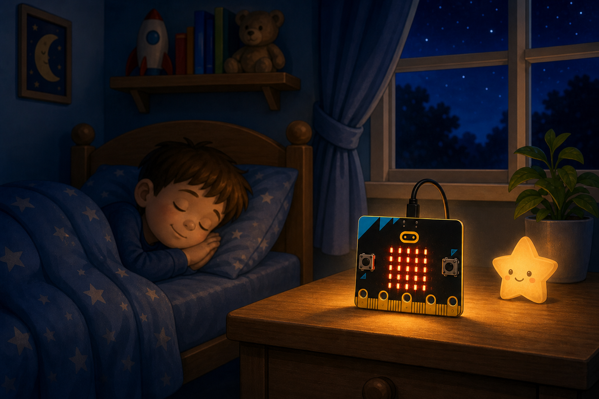
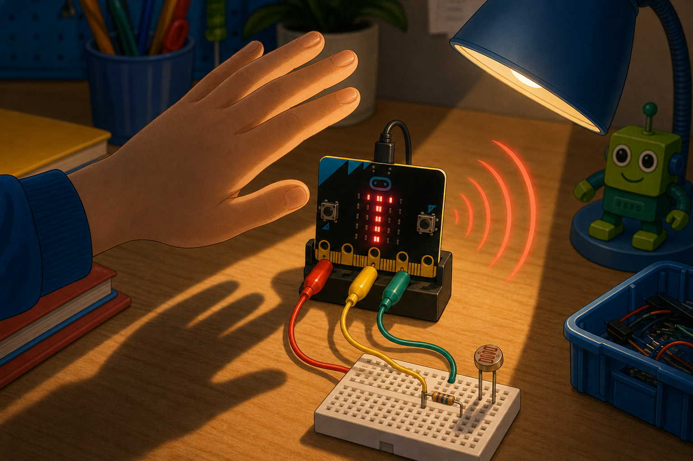

Night light
DetectRoom light level
→
DecideThe room is dark
→
DoLight up the display
The micro:bit can sense light using its LED display as a light sensor.
It gives a light level from 0 (dark) up to 255 (bright).
Your projects can react to daylight, shadows, or a torch shining on the screen.


from microbit import *
while True:
level = display.read_light_level()
display.scroll(level)basic.forever(function () {
let level = input.lightLevel()
basic.showNumber(level)
})display.read_light_level() to briefly use the LEDs to measure light and return a value from 0 to 255. Point the front of the micro:bit at the light.